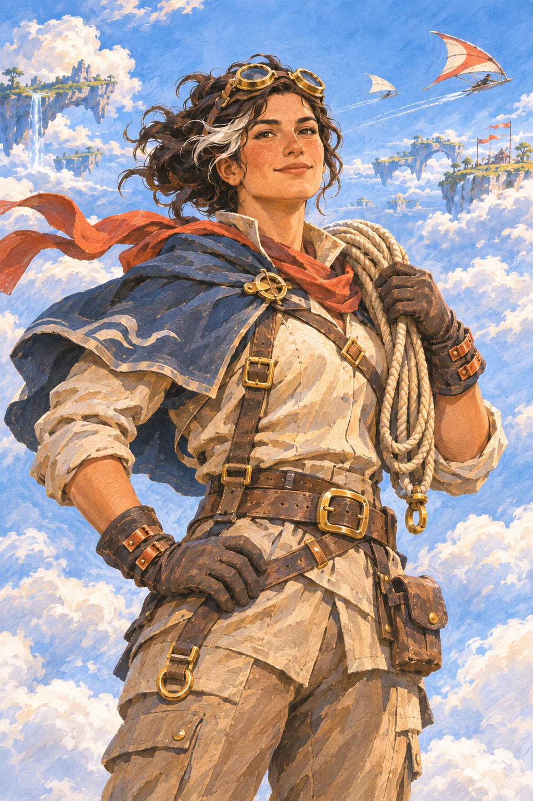
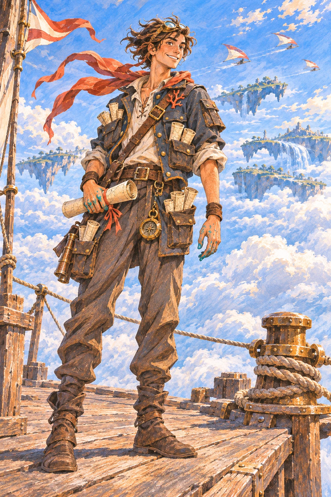
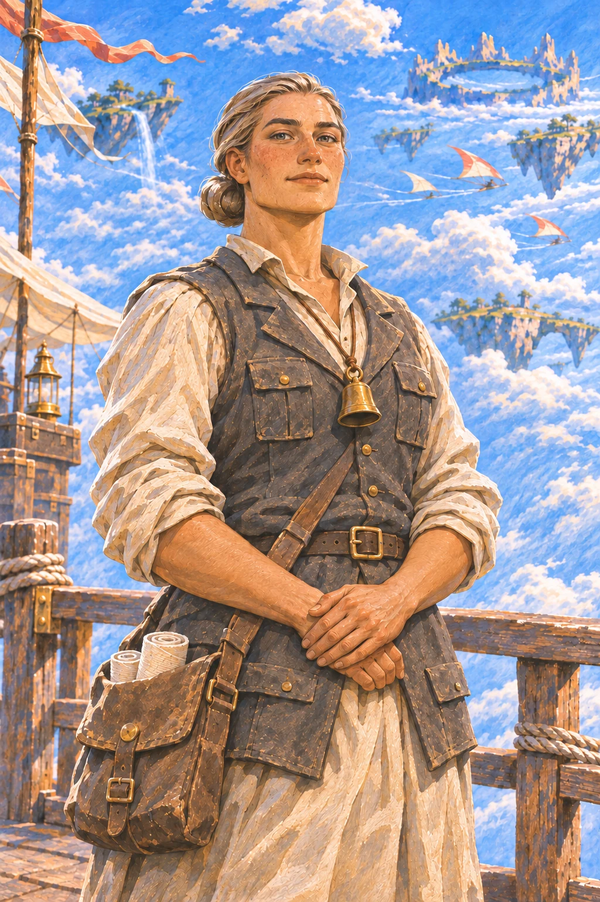
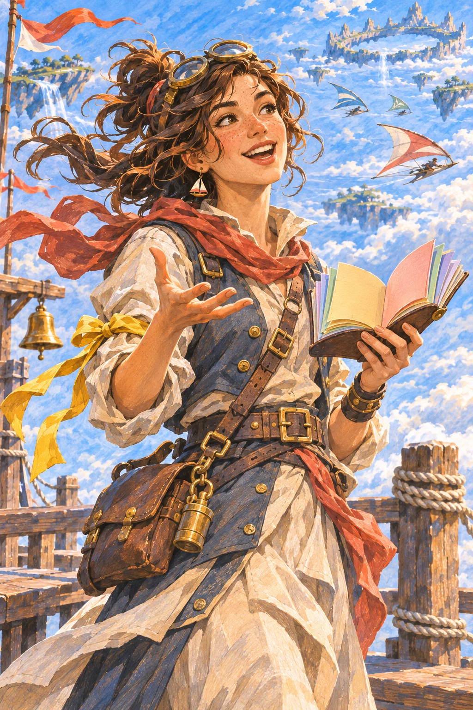
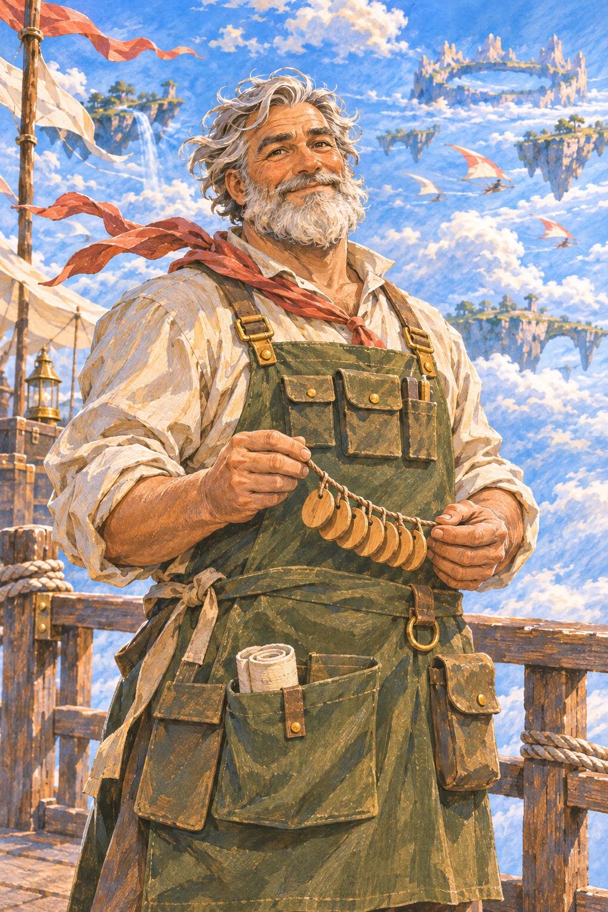

Мир и начало
Лазурный Разлом — архипелаг парящих каменных островов над облачным океаном. Естественные швы небесного течения меняют направление тяжести; у прозрачных отмелей расстояния отражения отличаются от настоящих. Парусные планеры держатся в воздухе благодаря обычной магии этого мира. Небесный Атлас — большая бумажная книга проверенных маршрутов, которую дополняет каждая регата. Он ничего не приводит в движение и не управляет островами. Знаки Атласа на столбах рисуют особым знаковым мелом — лазурным, с искрой; на время гонки его ящики опечатывают. Результаты участков пишут на доске этапов на корме судейской баржи «Ровный счёт». Полёт и гонка разыгрываются сценами по обычным проверкам, без отдельных правил корабельного боя.
Лазурный Разлом — архипелаг каменных островов, парящих над светлым облачным океаном. Внизу нет ни земли, ни дна, только облака до самого горизонта, а между островами бегут естественные швы небесного течения: войдёшь в такой шов — и тяжесть повернётся на четверть оборота, стена станет полом, а соседний остров, до которого рукой подать, окажется на другом витке пути. Здесь летают на парусных планерах, и хорошего пилота отличают не по скорости, а по тому, как он читает ветер.
Всё, что известно о проходах между островами, записано в Небесный Атлас — большую бумажную книгу проверенных маршрутов. Каждая регата дописывает в него страницу. Самая старая и самая знаменитая из них — Большой Небесный Обход: восемь экипажей, семь зачётных участков и финал у Кольца Короны. Знаки Атласа на столбах вдоль пути маршалы рисуют до старта особым знаковым мелом, лазурным, с искрой. Время каждого участка пишут мелом на доске этапов, и в финале экипажи уходят в небо по очереди, ровно с тем отставанием, которое заработали, — но не больше четверти часа. Победитель получает призовой резерв и право дать имя новой странице Атласа. В портах Разлома говорят, что имя в Атласе живёт дольше, чем имя на надгробии.
Порт Гелий, утро старта. Восемь планеров покачиваются на стартовых тросах у причала, пахнет лаком, мокрой парусиной и свежим мелом. Над причалом стоит большая доска в дубовой раме, и на ней восемь пустых строк — по одной на экипаж. Ваш планер, «Стриж», стоит у крайнего, восьмого места. Чужой капитан с соседнего причала уже присматривается к вашим снастям и улыбается так, будто готов предложить спор на завтрак.

29 лет · воин · уровень 3
Альта Ренн
Капитан малого планера и защитница экипажа
Хиты 31 · КД 11 · Скорость 30 футов
СИЛ 16 · ЛОВ 12 · ТЕЛ 16 · ИНТ 10 · МДР 12 · ХАР 10
Длинный меч, ручной топор.
Короткий синий плащ, перчатки с медными застёжками, белая прядь у виска.
Ты ведёшь свой первый экипаж в Большом Обходе и хочешь доказать, что капитан умеет одновременно бороться за победу и отвечать за людей.
Связь
Лис однажды вернул тебе потерянный капитанский знак; ты ещё не спросила, зачем он тогда оказался в чужом кармане.
В центре внимания
Предлагай Альте распределять спасательные задачи и выбирать, какое обещание капитан может дать от своего имени.
Личный вопрос
Сумеешь ли ты разделить ответственность, когда твой приказ перестанет быть самым надёжным путём?

24 лет · плут · уровень 3
Лис Тарен
Картограф коротких путей и лазутчик причалов
Хиты 24 · КД 13 · Скорость 30 футов
СИЛ 10 · ЛОВ 16 · ТЕЛ 14 · ИНТ 14 · МДР 12 · ХАР 12
Рапира, короткий лук.
Пальцы в пятнах бирюзовых чернил, короткая куртка со множеством карманов, мягкие сапоги.
Твоя первая проданная карта оказалась неточной. Регата даёт шанс вписать в Атлас действительно проверенный путь под своим именем.
Связь
Брин сохранил твою неудачную карту и отметил на ней места, где всё-таки стоило побывать.
В центре внимания
Давай Лису сравнивать маршруты, замечать физические следы и определять, кому достанутся копии открытия.
Личный вопрос
Подпишешь ли ты своё имя под картой, если придётся честно оставить на ней неизвестное?

32 лет · жрец · уровень 3
Яра Вей
Хранительница дорожных обетов и целительница
Хиты 24 · КД 11 · Скорость 30 футов
СИЛ 12 · ЛОВ 12 · ТЕЛ 14 · ИНТ 10 · МДР 16 · ХАР 14
Посох. Заклинания: «Лечащее слово», «Обнаружение магии».
Серый дорожный жилет поверх светлой одежды, маленький колокольчик без языка, спокойная улыбка.
Ты сопровождаешь исследовательские экспедиции и хочешь выяснить, можно ли состязаться яростно, не превращая соперника во врага.
Связь
Искра приходит к тебе проверять обещания перед тем, как произнести их вслух.
В центре внимания
Предлагай Яре услышать непохожих людей, установить границы помощи и защитить право человека отказаться.
Личный вопрос
Когда помощь становится вмешательством, и как спросить об этом самого нуждающегося?

27 лет · волшебник · уровень 3
Брин Орт
Исследователь небесной геометрии
Хиты 20 · КД 12 · Скорость 30 футов
СИЛ 8 · ЛОВ 14 · ТЕЛ 14 · ИНТ 16 · МДР 12 · ХАР 12
Посох. Заклинания: «Обнаружение магии», «Туманный шаг».
Круглые очки на шнурке, мел в нагрудном кармане, раскрывающийся деревянный угольник.
Тебя учили, что прямая всегда короче. Последняя поездка доказала обратное, и теперь ты хочешь понять почему.
Связь
Рута помогла тебе выбраться из перевёрнутой аудитории, пока ты пытался доказать, что застрять там невозможно.
В центре внимания
Давай Брину вести копию доски этапов мелом, ставить опыты с тяжестью и объяснять линию обычными словами.
Личный вопрос
Сможешь ли ты назвать красивую теорию ошибочной, если от этого зависит чей-то путь домой?

38 лет · воин · уровень 3
Рута Кель
Такелажница и проводница по каменным швам
Хиты 31 · КД 11 · Скорость 30 футов
СИЛ 16 · ЛОВ 12 · ТЕЛ 16 · ИНТ 10 · МДР 12 · ХАР 10
Длинный меч, ручной топор.
Широкий пояс с карабинами, на поясе — запасная страховка в красной оплётке, плетёные браслеты из старых канатов, волосы под красным платком.
Ты умеешь строить безопасный переход там, где остальные видят только пропасть, и мечтаешь научить этому новое поколение.
Связь
Альта доверяет твоему слову о снастях даже тогда, когда задержка грозит сорвать выгодный рейс.
В центре внимания
Предлагай Руте выбирать надёжную опору, обучать союзников и оценивать цену оставленного груза.
Личный вопрос
Что ты готова отпустить, чтобы удержать человека, и кто удержит тебя?

22 лет · плут · уровень 3
Искра Ним
Посредница между экипажами и собирательница слухов
Хиты 24 · КД 13 · Скорость 30 футов
СИЛ 10 · ЛОВ 16 · ТЕЛ 14 · ИНТ 14 · МДР 12 · ХАР 12
Рапира, короткий лук.
Жёлтая лента на рукаве, блокнот из разноцветных листов, серьга в форме крошечного паруса.
Ты мечтаешь открыть бюро честных экспедиций. Победа даст известность, а Обход проверит, насколько ты сама веришь собственным правилам.
Связь
Лис знает, когда ты шутишь от страха, и умеет перевести разговор так, чтобы никто не почувствовал себя слабым.
В центре внимания
Давай Искре читать договоры, выслушивать соперников и формулировать предложение без скрытой цены.
Личный вопрос
Скажешь ли ты неприятную правду союзникам, когда удобное умолчание сулит общий успех?

45 лет · жрец · уровень 3
Сев Аран
Полевой лекарь и хранитель переклички
Хиты 24 · КД 11 · Скорость 30 футов
СИЛ 12 · ЛОВ 12 · ТЕЛ 14 · ИНТ 10 · МДР 16 · ХАР 14
Посох. Заклинания: «Лечащее слово», «Обнаружение магии».
Зелёный фартук с дорожными карманами, серебряная борода, деревянные жетоны для счёта пассажиров.
Ты привык считать пассажиров по местам. В Обходе хочешь узнать, ради чего летят даже те, кто мешает вашему экипажу победить.
Связь
Ты предложил Яре сопровождать эту экспедицию после того, как она помогла незнакомому экипажу без оплаты.
В центре внимания
Давай Севу составлять добровольные очереди, замечать усталость и спрашивать тихого участника о его потребностях.
Личный вопрос
Как сохранить заботу о каждом, когда число нуждающихся больше числа свободных мест?

31 лет · волшебник · уровень 3
Мея Сол
Маг звуковых приборов и исследовательница отражений
Хиты 20 · КД 12 · Скорость 30 футов
СИЛ 8 · ЛОВ 14 · ТЕЛ 14 · ИНТ 16 · МДР 12 · ХАР 12
Посох. Заклинания: «Обнаружение магии», «Туманный шаг».
Короткие тёмные волосы, медные трубочки на ремне, плащ с подкладкой цвета вечернего облака.
Ты ищешь место, где эхо отвечает иначе, чем говорящий, и хочешь понять, где заканчивается отражение и начинается собеседник.
Связь
Брин всегда подписывает ваши совместные заметки обоими именами; ты хочешь ответить ему той же щедростью.
В центре внимания
Предлагай Мее проверять связь, задавать контрольные вопросы и отличать наблюдение от красивой догадки.
Личный вопрос
Сумеешь ли ты слушать ответ, который разрушает твоё любимое предположение?